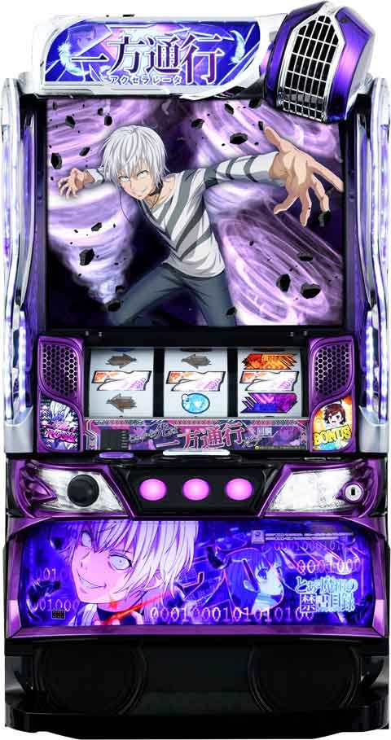
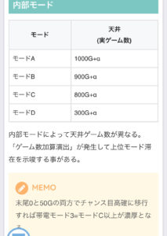
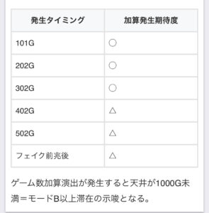
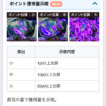
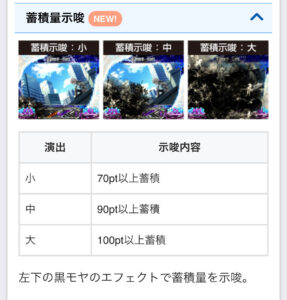
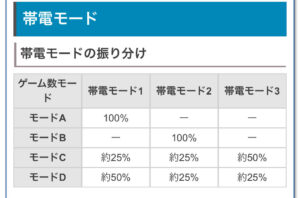
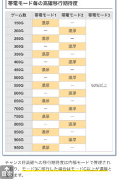

Lとある魔術の禁書目録 一方通行 アクセレーター

【天井情報】
1000G+α AT当選
リセット時は100G以上天井短縮(平均天井が600G)
【リセット判別】
設定変更時は天井が100G以上短縮。内部的にゲーム数の加算抽選があるので高確移行ゲーム等からの判別は厳しい
{kind=link}
【有利区間について】
有利区間リセットされるとAT継続+RUSHレベル4移行となる。見た目上では判断つかない？
有利区間切れ条件 差枚+2000～+2400枚で有利切れ？
狙い目
【リセット狙い】
液晶250Gから
or
実ゲーム200Gから
※天井短縮時にどの程度G数加算演出が発生するか不明のため少しボーダー上げてます。
【AT間天井狙い】
駆け抜け以外後 液晶650Gから
駆け抜け後 液晶540Gから
3連続駆け抜け後 液晶400Gから
【ゾーン狙い】
モードD時にどの程度ゲーム数加算演出発生するのか不明。
モードDにループ性がありそう？実ゲーム300-400G当選が続くとループしてる可能性あり。
・300ゾーン狙い(モードD狙い)
※前兆の有無や当選などは320Gくらいで決着つく感じ？
※300-400g当選後でも300-330Gくらいまでに当選してる台が良さそう。
液晶260Gから
駆け抜け後 液晶250Gから
駆け抜け2連続後 液晶180Gから
駆け抜け3連続後 液晶150Gから
実ゲーム300-400G当選後 液晶260Gから
2連続以上300-400G当選後 液晶200Gから
【黒羽ポイント狙い】
蓄積大なら開放まで？
【有利区間切れ狙い】
※差枚+2000枚超えると既に有利切れてる可能性あり。
※有利切れ狙い出来そうな差枚の台をモードD天井狙い(300ゾーン)をする。
差枚+1500枚以上 50Gから
差枚+1200枚以上 200Gから
前回モードD当選想定時
差枚+1000枚以上 50Gから
やめ時
AT後夜の第七学区抜けたらやめ。
※モードDループや差枚狙い出来そうならAT後100G+αを消化してやめるなど調整する感じ？
その他
内部モード

加算発生タイミング

ポイント獲得量示唆

蓄積量示唆

帯電モード


参考元
基本情報
- メーカー: オレンジ
- 機械割: 97.9% 〜 114.5%
- 導入開始日: 2024年12月16日（月）
- ゲーム性概要: ●3種類のチャンス目がゲームのカギ ●AT当選のメインとなるのはCZ ●ATは純増約2.5枚/G、1セット40GのST型 ●約150枚獲得できるBIGボーナス（リアルボーナス）を搭載 ●BIGの連打に期待できる特化ゾーンもアリ！ ※コンプリート機能搭載機


打ち方
打ち方・小役
打ち方（小役狙い）
「オールフリー打ちでOK」

「レア役の停止形」

チャンス目はすべてリプレイフラグ。
「チャンス目の1確・2確目」

※一方通行…アクセラレータ、打ち止め…ラストオーダー
左リール白7狙い
「上段白7停止」

ベルorチャンス目。チャンス目期待度約25%。
「中段白7停止」

チャンス目濃厚。
「下段白7停止」

リプレイorチャンス目。チャンス目期待度約50%。
「枠内白7非停止」

チャンス目の可能性あり。小役の中段テンパイハズレがチャンス目になる。
変則押しはNG

通常時・押し順ナビ非発生時は左リール第1停止での消化を推奨する。
ボーナス中の打ち方


ボーナス中は基本的に押し順ナビ通りに打てばOK。キラキラのエフェクトが発生した場合は、左or中リールのいずれかに白7を狙って消化しよう。 白7を狙わなかった場合、数ゲーム間押し順ナビが発生しなくなったり、ハズレでのポイント獲得抽選が正しくおこなわれない可能性がある。
解析情報通常時
小役関連
チャンス目確率
| 役 | 通常中 | チャンス目高確 | |
|---|---|---|---|
| 共通 | 一方通行チャンス目 | 1/61.8 | 1/61.8 |
| 共通 | 打ち止めチャンス目 | 1/61.8 | 1/61.8 |
| 共通 | 3連チャンス目 | 1/993.0 | 1/993.0 |
| 逆押し | 一方通行チャンス目 | ー | 1/38.5 |
| 逆押し | 打ち止めチャンス目 | ー | 1/38.5 |
| 逆押し | 3連チャンス目 | ー | 1/2048.0 |
| チャンス目合算 | 1/29.98 | 1/11.67 |
チャンス目高確中のリプレイフラグ成立時は必ず逆押しナビが発生し、約1/2が逆押しチャンス目になる。
共通ベル・リプレイ確率
| 役 | 確率 |
|---|---|
| 共通ベルA | 1/42.3 |
| 共通ベルB | 1/62.6 |
| 共通ベルC | 1/119.2 |
| 上段リプレイ | 1/127.3 |
左リール白7狙い時・共通ベルの判別法
| 役 | 揃うライン |
|---|---|
| 共通ベルA | 中段揃い |
| 共通ベルB | 下段揃い |
| 共通ベルC | 右上がり揃い |
左リール白7狙い時は、共通ベルA〜Cを判別可能だ。
※一方通行…アクセラレータ、打ち止め…ラストオーダー
チャンス目の抽選内容
| 役 | 内容 |
|---|---|
| 一方通行チャンス目or 打ち止めチャンス目 | CZ抽選をおこない、漏れた場合は 対応役状態移行抽選 |
| 3連チャンス目 | CZ当選濃厚 |
チャンス目成立時はまずCZ抽選が抽選され、漏れた場合に対応役状態への移行抽選をおこなう。
※一方通行…アクセラレータ、打ち止め…ラストオーダー
3連チャンス目契機・当選CZ振り分け
※3連チャンス目はCZ当選濃厚
高設定ほどCZ当選率が高く、上位CZに移行しやすい。
※一方通行…アクセラレータ、打ち止め…ラストオーダー
内部状態関連
チャンス目高確

リプレイ成立時に逆押しナビが発生する状態。逆押しナビの約50%でチャンス目が停止するため、チャンス目確率が1/9.6までアップしている。
チャンス目高確移行契機
| 項目 | 内容 |
|---|---|
| 移行契機 | ● 規定ゲーム数消化 ● ダブル対応役状態移行時 |
| 継続ゲーム数 | ● 規定ゲーム数消化→20G＋α ● ダブル対応役状態移行時→残っている高確ゲーム数分継続 |
| 逆押しナビ発生確率 | 1/9.6 （約50%でチャンス目停止） |
| 実質チャンス目確率 | 1/11.7 |
ダブル対応役状態へは必ず高確を経由して移行するため、高確の残りゲーム数がダブル対応役状態の残りゲーム数になる。ただし、残りが10G以下の場合は10Gにセットされる。
モード
モードごとの天井ゲーム数
| モード | 天井 |
|---|---|
| モードA | 1000G＋α |
| モードB | 900G＋α |
| モードC | 800G＋α |
| モードD | 300G＋α |
設定変更時・AT終了時にモードを抽選。液晶に表示されたゲーム数は加算されることがあるが、天井の対象となるのは実ゲーム数（データ表示機上のゲーム数）。
「天井の短縮抽選」

内部的に天井短縮抽選がおこなわれていて、当選時は100G単位で短縮。上記画像の演出発生時は100G以上が液晶ゲーム数に加算されるので、モードA以外滞在や、天井短縮に当選した可能性がアップする。短縮演出は規定ゲーム数（101G、202G、302G…）消化時やフェイク前兆終了時に発生する可能性あり。
ゲーム数加算演出発生期待度
| タイミング | 期待度 |
|---|---|
| 101G | ◯ |
| 202G | ◯ |
| 302G | ◯ |
| 402G | △ |
| 502G | △ |
| フェイク前兆終了時 | △ |
帯電モード概要
ゲーム数契機のチャンス目高確への移行を管理するモード。先に決まったゲーム数モードによって帯電モードの振り分けが変化する。
帯電モードの振り分け
| ゲーム数モード | 帯電モード1 | 帯電モード2 | 帯電モード3 |
|---|---|---|---|
| モードA | 100% | ー | ー |
| モードB | ー | 100% | ー |
| モードC | 約25% | 約25% | 約50% |
| モードD | 約50% | 約25% | 約25% |
帯電モードごとのチャンス目高確移行率
| ゲーム数 | 帯電モード1 | 帯電モード2 | 帯電モード3 |
|---|---|---|---|
| 150G | 濃厚 | ー | 全ゾーン 50%以上 |
| 200G | ー | 濃厚 | 全ゾーン 50%以上 |
| 250G | 濃厚 | ー | 全ゾーン 50%以上 |
| 300G | ー | 濃厚 | 全ゾーン 50%以上 |
| 350G | 濃厚 | ー | 全ゾーン 50%以上 |
| 400G | ー | 濃厚 | 全ゾーン 50%以上 |
| 450G | 濃厚 | ー | 全ゾーン 50%以上 |
| 500G | ー | 濃厚 | 全ゾーン 50%以上 |
| 550G | 濃厚 | ー | 全ゾーン 50%以上 |
| 600G | ー | 濃厚 | 全ゾーン 50%以上 |
| 650G | 濃厚 | ー | 全ゾーン 50%以上 |
| 700G | ー | 濃厚 | 全ゾーン 50%以上 |
| 750G | 濃厚 | ー | 全ゾーン 50%以上 |
| 800G | ー | 濃厚 | 全ゾーン 50%以上 |
| 850G | 濃厚 | ー | 全ゾーン 50%以上 |
| 900G | ー | 濃厚 | 全ゾーン 50%以上 |
| 950G | 濃厚 | ー | 全ゾーン 50%以上 |
帯電モード3（末尾0Gと50G付近の両方でチャンス目高確へ移行）はゲーム数モードC以上濃厚となるため、早い初当りにも期待できる。
チャンス目リンクシステム
チャンス目リンクシステム概要

チャンス目成立時の一部やチャンス目高確中に移行する状態で、 開いているシャッターと違うチャンス目を引けば40%以上でCZに当選 する。 例えば一方通行チャンス目を引き、一方通行のシャッターが開いている状態で打ち止めチャンス目を引けば40%以上でCZに当選。打ち止めチャンス目ではなく一方通行チャンス目を引いた場合はダブル対応役状態移行のチャンスとなる。
対応役状態の概要
| 状態 | 内容 |
|---|---|
| 対応役状態 | 契機となったチャンス目と逆のチャンス目が 成立すればCZ当選のチャンスとなる状態 |
| ダブル 対応役状態 | 両方のチャンス目が対応役となる状態 |
対応役状態への移行契機
| 状態 | 契機 |
|---|---|
| 対応役状態 | ●チャンス目成立時の約33%（設定1） ● チャンス目高確移行時 （必ずどちらかの対応役状態へ） |
| ダブル 対応役状態 | ● 対応役状態中に、対応チャンス目ではないチャンス目が成立した時の抽選 |
「ダブル対応役状態」

対応役状態中に、非対応のチャンス目を引いた場合はダブル対応役状態移行のチャンス。同一区間で引いたチャンス目の回数が多いほど移行期待度が上がり、3回目は必ず移行する。
ダブル対応役状態移行率
| 非対応のチャンス目回数 | 移行率 |
|---|---|
| 1回目 | 62.5% |
| 2回目 | 74.0% |
| 3回目 | 100% |
※一方通行…アクセラレータ、打ち止め…ラストオーダー
対応役状態の継続ゲーム数振り分け
高設定ほどチャンス目成立時に対応役状態へ移行しやすく、長いゲーム数が選ばれやすい。
CZ連モード
CZ連モード概要
RUSH終了時は必ずCZ連モードへ移行し、滞在中は 全役でCZを抽選 する。転落率の異なる3つのモードが存在し、20Gの保証ゲーム数終了後から転落抽選がスタート。100G経過してもCZ連モードに滞在していた場合、天井となり一方通行＆打ち止めCHANCEへ突入する（AT濃厚）。
CZ連モード性能
| 項目 | 内容 |
|---|---|
| 突入契機 | AT終了後 |
| 消化中の抽選 | 全役でCZを抽選 |
| CZ確率 | 約1/32 |
| 保証ゲーム数 | 20G |
| その他 | ショート・ミドル・ロングによって転落率が変化、 100G到達で一方通行＆打ち止めCHANCE突入 |
前兆中やCZ中は保証ゲーム数の減算ストップ。転落抽選もおこなわれない。
※一方通行…アクセラレータ、打ち止め…ラストオーダー
毎ゲームのCZ当選率
| 抽選契機 | 当選率 |
|---|---|
| 全役 | 3.1% |
CZ当選時の振り分け
| CZ | ショート | ミドル | ロング |
|---|---|---|---|
| 一方通行CHANCE | 100% | 87.5% | 75.0% |
| 打ち止めCHANCE | ー | 12.5% | 12.5% |
| 一方通行＆打ち止めCHANCE | ー | ー | 12.5% |
打ち止めCHANCE当選でCZ連モードミドル以上、一方通行＆打ち止めCHANCE当選時はCZ連モードロング滞在が濃厚となる。
※一方通行…アクセラレータ、打ち止め…ラストオーダー
CZ連モードからの転落確率
| モード | 確率 |
|---|---|
| ショート | 1/13.5 |
| ミドル | 1/32.0 |
| ロング | 1/64.0 |
※保証ゲーム数が0になってから転落抽選がスタート
CZ共通
CZトータル確率
| 設定 | 確率 |
|---|---|
| 1 | 1/142.6 |
| 2 | 1/139.7 |
| 3 | 1/134.1 |
| 4 | 1/124.6 |
| 5 | 1/115.3 |
| 6 | 1/105.9 |
一方通行CHANCE（CZ）
一方通行CHANCE概要

チャンス目成立でAT濃厚となるCZ。通常時に比べて、チャンス目確率はアップしている。色ナビ系演出がメインなので、ベル対応演出でベル否定の出目が停止など、矛盾に注目だ。
一方通行CHANCE性能
| 項目 | 内容 |
|---|---|
| 突入契機 | チャンス目成立時の抽選 |
| 継続ゲーム数 | 10G （終了後1G目のチャンス目も有効） |
| 消化中の抽選 | チャンス目成立でAT濃厚 |
| チャンス目確率 | 1/22.21 |
| 成功期待度 | 約40% |
| その他 | 3連チャンス目は初回ATのステージランクA以上 |
一方通行CHANCE確率
| 設定 | 確率 |
|---|---|
| 1 | 1/168.7 |
| 2 | 1/165.5 |
| 3 | 1/159.6 |
| 4 | 1/152.9 |
| 5 | 1/145.5 |
| 6 | 1/134.1 |
※一方通行…アクセラレータ
打ち止めCHANCE（CZ）
打ち止めCHANCE概要

期待度約70%の高期待度CZ。全役でAT抽選がおこなわれ、3連チャンス目ならAT濃厚かつ、初回ステージがランクA以上から始まる。
打ち止めCHANCE性能
| 項目 | 内容 |
|---|---|
| 突入契機 | チャンス目成立時の抽選 |
| 継続ゲーム数 | 10G （終了後1G目のチャンス目も有効） |
| 消化中の抽選 | 全役でAT抽選、チャンス目はAT濃厚 |
| 成功期待度 | 約70% |
| その他 | 最終ゲームは小役揃いで成功濃厚、 3連チャンス目は初回ATのステージランクA以上 |
打ち止めCHANCE確率
| 設定 | 確率 |
|---|---|
| 1 | 1/3244.1 |
| 2 | 1/3188.7 |
| 3 | 1/2892.9 |
| 4 | 1/1838.2 |
| 5 | 1/1356.3 |
| 6 | 1/1247.1 |
※打ち止め…ラストオーダー
AT当選率
| 役 | 1～9G目 | 10G目 |
|---|---|---|
| ハズレ | 0.4% | 約25% |
| リプレイ | 約25% | 100% |
| ベル揃い | 約25% | 100% |
| チャンス目 | 100% | 100% |
※CZ終了後1G目のチャンス目はAT濃厚
※打ち止め…ラストオーダー
一方通行＆打ち止めCHANCE（CZ）
一方通行＆打ち止めCHANCE概要

突入した時点でAT当選濃厚。消化中はBIGボーナス抽選がおこなわれ、チャンス目を引けばBIGボーナス当選濃厚となる。
一方通行＆打ち止めCHANCE性能
| 項目 | 内容 |
|---|---|
| 突入契機 | CZ当選時の一部 |
| 継続ゲーム数 | 10G |
| 消化中の抽選 | ベル・リプレイでチャンス、 チャンス目はBIGボーナス濃厚 |
| 成功期待度 | 約50% |
| その他 | 突入した時点でAT濃厚、 成功時はBIGを獲得 |
一方通行＆打ち止めCHANCE確率
| 設定 | 確率 |
|---|---|
| 1 | 1/1290.5 |
| 2 | 1/1244.1 |
| 3 | 1/1182.1 |
| 4 | 1/1058.9 |
| 5 | 1/943.6 |
| 6 | 1/845.7 |
※一方通行…アクセラレータ、打ち止め…ラストオーダー
ボーナス当選率
| 役 | 1～9G目 | 10G目 |
|---|---|---|
| ハズレ | ー | ー |
| リプレイ | 12.9% | 100% |
| ベル | 12.9% | 100% |
| チャンス目 | 100% | 100% |
10G目は小役を引ければボーナス濃厚となる。
継続能力進化計画
継続能力進化計画概要

RUSH終了後、100G以内にATを引き戻すとRUSHレベルが昇格。引き戻し3回目以降はレベル4濃厚で、引き戻し当選時は一方通行ZONE突入までの枚数カウントが引き継がれる。 内部的にCZ連モードが終了していても、自力で100G以内に引き戻せばRUSHレベルは昇格する。
引き戻し回数ごとの液晶枠色
| 引き戻し回数 | 枠色 |
|---|---|
| 0回 | 黄 |
| 1回目 | 緑 |
| 2回目～ | 赤 |
引き戻し回数に応じて、液晶周囲の枠色が変化。枠色はAT開始画面の背景とリンクしている（初回引き戻し時は枠色が黄なので、ATのタイトル画面の背景も黄）。 引き戻し状態は100G経過で終了だが、100G到達時に前兆中やCZ中だった場合は終了まで有効となる。
※一方通行…アクセラレータ
黒羽ポイント
黒羽ポイント概要

CZ失敗時などに内部的に蓄積されていくポイントで、100pt以上獲得した状態でATに当選すると初回ステージがランクSから始まる（100G以内の引き戻しによるAT当選時を除く）。 黒い羽のエフェクトが発生すれば、ポイント蓄積を示唆!?
演出動画
ロングフリーズ
3連チャンス目の一部で発生。恩恵はアクセルセブンRUSH直撃＆ストックと超強力！
フリーズ
ロングフリーズ


ロングフリーズ性能
| 項目 | 内容 |
|---|---|
| 発生契機 | 3連チャンス目の一部（発生は次ゲームのレバーON時） |
| 恩恵 | アクセルセブンRUSH直撃＆ストック |
| 期待枚数 | 約3000枚以上 |
解析情報ボーナス時
一方通行RUSH（AT）
一方通行RUSH概要

40G継続のST型AT。消化中はボーナスを抽選していて、ボーナス当選で40Gが再セットされる。セットごとに抽選されるステージランク（C〜Sの4種類）に応じて、チャンス目確率やチャンス目成立時のボーナス当選率が変化する。
一方通行RUSH性能
| 項目 | 内容 |
|---|---|
| 継続ゲーム数 | 40G/セット |
| 1Gあたりの純増 | 約2.5枚 |
| 消化中の抽選 | 全役でボーナスを抽選し、 ボーナス当選でAT40Gを再セット |
| その他 | ● ラッシュレベル（1～4）とステージランク（C～S）でチャンス目確率やボーナス確率が変化 ● CZやエピソードボーナスを契機に特化ゾーンに突入 |
［ステージランク］

ランクは液晶上部に表示されていて、連動して背景も変化。ステージランクはボーナス当選のたびに再セットされる。
［保証ベルナビ回数］

RUSH開始時にベルナビの保証回数を抽選していて、その回数以下のナビでRUSHが終了した場合は復活する。
※一方通行…アクセラレータ
RUSHレベル
1〜4段階のRUSHレベルによって、AT中にステージランクの振り分けが変化。高レベルほど高いステージランクが選ばれやすいので、大量出玉獲得につながりやすい。
初当り時は専用のRUSHレベル（裏RUSHレベル）抽選がおこなわれる。
RUSHレベル性能
| 項目 | 内容 |
|---|---|
| レベルの種類 | １～4の4種類（振り分けは全設定共通） |
| レベルで変化する要素 | ステージランクの振り分け |
| レベルアップ契機 | ● AT終了後100G以内の引き戻し時に1段階アップ ● エピソードボーナス「最強VS最弱」発生時はレベル4へアップ濃厚 |
| レベルリセット契機 | AT終了後100Gを消化 |
裏RUSHレベル振り分け
| レベル | 振り分け |
|---|---|
| レベル1 | 89.8% |
| レベル2 | 8.6% |
| レベル3 | 1.2% |
| レベル4 | 0.4% |
引き戻しで昇格したRUSHレベルと裏RUSHレベルの高い方が当該ATレベルになる。例えば裏RUSHレベルが4だった場合、初回からずっとRUSHレベル4の数値でステージランク抽選がおこなわれる。
※一方通行…アクセラレータ
ステージランクの序列
| ステージランク | チャンス目確率＆ボーナス確率 |
|---|---|
| ランクC | 低 |
| ランクB | ↓ |
| ランクA | ↓ |
| ランクS | 高 |
初回ATはランクB以上（RUSHレベルが4の場合はランクA以上）。ステージはあくまでも示唆なので、見た目上のステージよりも内部的なランクが高いことはある。
ステージランクAとSの連続性
| ステージランク | 内容 |
|---|---|
| ランクA | ボーナス当選タイミングが早いほど、 次回のランクがAになりやすい |
| ランクS | ボーナスを引けば次回もランクS濃厚、 ボーナスを引けなくてもRUSHは継続 |
ランクSはかなり特別な状態で、自力でボーナスを引けば次セットもランクSが継続。ボーナスを引けなかった場合でもATは継続する（ランクは再抽選）。
［ランクC］

［ランクB］

［ランクA］

［ランクS］

※一方通行…アクセラレータ
ボーナス当選率
| ステージランク | 非対応 チャンス目 | 対応 チャンス目 | 3連 チャンス目 |
|---|---|---|---|
| ランクC | 18.0% | 100% | 100% |
| ランクB | 25.0% | 100% | 100% |
| ランクA | 37.5% | 100% | 100% |
| ランクS | 37.5% | 100% | 100% |
フェイク前兆中でも対応チャンス目を引けばボーナスへの書き換え濃厚。本前兆中はBIGへの書き換えやBIGストックが抽選される。
※一方通行…アクセラレータ
文字ステージ

エピソードボーナスの「最強VS最弱」終了時に移行。液晶がブラックアウトすればアクセルセブンRUSHへ突入する。 成功期待度は約40%だ。
※一方通行…アクセラレータ
AT中・チャンス目高確移行率
| 役 | 移行率 |
|---|---|
| 下段ベル | 12.5% |
| 右上がりベル | 33.2% |
| 上段リプレイ | 33.2% |
※左リール白7狙い時のみ判別可能
左リールに白7を狙っていた場合のみ、契機役を判別可能。チャンス目高確は最低13G継続する。
AT中のチャンス目
ステージランク別・チャンス目確率
| 役 | ランク C | ランク B | ランク A・S | |
|---|---|---|---|---|
| 共通 | 一方通行チャンス目 | 1/61.8 | ||
| 共通 | 打ち止めチャンス目 | 1/61.8 | ||
| 共通 | 3連チャンス目 | 1/993.0 | ||
| 押し順 | 一方通行チャンス目 | 1/130.7 | 1/58.9 | 1/41.2 |
| 押し順 | 打ち止めチャンス目 | 1/130.7 | 1/58.9 | 1/41.2 |
| 押し順 | 3連チャンス目 | 1/3572.7 | ||
| チャンス目合算 | 1/20.4 | 1/14.8 | 1/12.2 |
チャンス目高確中・チャンス目確率
| 役 | チャンス目 高確 | 3連チャンス目 高確 | |
|---|---|---|---|
| 共通 | 一方通行チャンス目 | 1/61.8 | |
| 共通 | 打ち止めチャンス目 | 1/61.8 | |
| 共通 | 3連チャンス目 | 1/993.0 | |
| 押し順 | 一方通行チャンス目 | 1/28.0 | ー |
| 押し順 | 打ち止めチャンス目 | 1/28.0 | ー |
| 押し順 | 3連チャンス目 | 1/3572.7 | 1/14.0 |
| チャンス目合算 | 1/9.5 | 1/9.5 |
一方通行ZONE or LEVEL 0中・チャンス目確率
| 役 | 一方通行ゾーン | LEVEL 0 | |
|---|---|---|---|
| 共通 | 一方通行チャンス目 | 1/61.8 | |
| 共通 | 打ち止めチャンス目 | 1/61.8 | |
| 共通 | 3連チャンス目 | 1/993.0 | |
| 押し順 | 一方通行チャンス目 | 1/121.1 | ー |
| 押し順 | 打ち止めチャンス目 | 1/121.1 | ー |
| 押し順 | 3連チャンス目 | 1/3572.7 | ー |
| チャンス目合算 | 1/19.94 | 1/29.98 |
※共通チャンス目成立時の一部で演出として押し順を出すケースあり
ステージランクが高いほど押し順チャンス目確率がアップ。チャンス目高確中は専用の数値で抽選される。 押し順チャンス目は中押しと逆押しの2種類で、それぞれ別フラグかつ、成立したリプレイによって一方通行チャンス目と打ち止めチャンス目のどちらが止まるかも決まっている。そのため、対応役状態等によって出現するチャンス目が変化することはない。
※一方通行…アクセラレータ、打ち止め…ラストオーダー
押し順チャンス目成立時のチャンス目への変換発生率
内部的に押し順チャンス目成立時は、滞在状況を参照してナビを出すか（チャンス目として停止させるか）を抽選する。
チャンス目確率はランク・滞在状態でのみ変化するので、特定の状態だとチャンス目が出現しにくくなる…といったことはない。
押し順チャンス目フラグの確率
| 役 | 確率 |
|---|---|
| 中押しチャンス目合算 | 1/51.85 |
| 逆押しチャンス目合算 | 1/19.10 |
滞在状況ごとのチャンスへの変換発生率
| 滞在状況 | 中押しチャンス目 | 逆押しチャンス目 |
|---|---|---|
| ランクC | 39.5% | 15.2% |
| ランクB | 87.5% | 33.2% |
| ランクA | 87.5% | 60.9% |
| ランクS | 100% | 100% |
| チャンス目高確 | 100% | 100% |
| 一方通行ZONE | 23.4% | 23.4% |
| LEVEL 0 | ー | ー |
変換を加味した実質押し順チャンス目確率
| 滞在状況 | 中押し チャンス目 | 逆押し チャンス目 | 合算 |
|---|---|---|---|
| ランクC | 1/131.42 | 1/125.35 | 1/64.15 |
| ランクB | 1/59.25 | 1/57.51 | 1/29.19 |
| ランクA | 1/59.25 | 1/31.34 | 1/20.50 |
| ランクS | 1/59.25 | 1/31.34 | 1/20.50 |
| チャンス目高確 | 1/51.85 | 1/19.10 | 1/13.96 |
| 一方通行ZONE | 1/221.22 | 1/81.47 | 1/59.54 |
| LEVEL 0 | ー | ー | ー |
※一方通行…アクセラレータ
一方通行ZONE（CZ）
一方通行ZONE概要

AT中の液晶左上のカウント（獲得枚数）が500に到達するごとに突入するCZ。チャンス目成立でBIG以上の恩恵獲得が濃厚となる。
一方通行ZONE性能
| 項目 | 内容 |
|---|---|
| 突入契機 | 獲得枚数が500枚到達ごと |
| 継続ゲーム数 | 10G |
| 消化中の抽選 | チャンス目成立でBIG以上を獲得 |
「報酬ルーレット」

ルーレット中のチャンス目成立でエピソードボーナス以上濃厚！
※一方通行…アクセラレータ
一方通行ZONE成功時の恩恵振り分け
| 恩恵 | 一方通行or 打ち止めチャンス目 | 3連チャンス目 |
|---|---|---|
| BIGボーナス | 65.6% | ー |
| エピソードボーナス | 21.9% | 63.7% |
| LEVEL 0 | 12.5% | 36.3% |
※一方通行…アクセラレータ、打ち止め…ラストオーダー
LEVEL 0（CZ）
LEVEL 0概要

アクセルセブンRUSH突入をかけたCZ。失敗してもBIG＋次回ステージランクA以上となる。
LEVEL 0性能
| 項目 | 内容 |
|---|---|
| 突入契機 | 一方通行ZONE成功時 |
| 継続ゲーム数 | 10G |
| 消化中の抽選 | 全役で成功抽選、チャンス目は成功濃厚 |
| 成功期待度 | 約50% |
| 成功時 | アクセルセブンRUSH |
| 失敗時 | BIG＋次回ステージランクA以上 |
※一方通行…アクセラレータ
LEVEL 0の成功当選率
| 役 | 当選率 |
|---|---|
| 下記以外 | 0.8% |
| 押し順なしリプレイ | 18.0% |
| 共通ベル | 18.0% |
| チャンス目 | 100% |
成否の告知は最終ゲーム。内部的に成功後はBIGのストックが抽選される。
ボーナス
BIGボーナス概要

約150枚を獲得できるリアルボーナスで、消化中はチャンス目によるBIG1G連を抽選。ハズレ時にポイントを獲得していき、ボーナス終了時の累計ポイントでチャンス目高確への移行が抽選される。
BIGボーナス性能
| 項目 | 内容 |
|---|---|
| 当選契機 | AT中の抽選、通常時CZ成功時の一部 |
| 獲得枚数 | 約150枚 |
| 消化中の抽選 | チャンス目の約50%でBIGをストック、 ハズレでのポイント獲得抽選 |
| ボーナス終了時 | 獲得したポイントでチャンス目高確移行を抽選 |
ハズレでのポイント抽選
| 項目 | 抽選内容 |
|---|---|
| ハズレ時 | 抽選で1～10ptを獲得 |
| 10pt以上獲得時 | チャンス目高確移行濃厚 |
| 20pt獲得時 | 3連チャンス目高確移行濃厚 |
エピソードボーナス概要
全5種類のエピソードによって獲得できる恩恵が異なる。 液晶には表示されないが通常のBIGと同様にハズレでのポイント獲得抽選もあり、10pt到達でチャンス目高確移行濃厚だ。
エピソードボーナス性能
| 項目 | 内容 |
|---|---|
| 当選契機 | BIG当選時の一部 |
| 獲得枚数 | 約150枚 |
| 消化中の抽選 | ハズレでのポイント獲得抽選 |
| ボーナス終了時 | 10pt獲得でチャンス目高確へ |
エピソードごとの恩恵
| エピソード | 恩恵 |
|---|---|
| 最終信号 | 次回ステージランクA以上 |
| 学習装置 | 次回ステージランクA以上 |
| 未元物質 | 次回ステージランクA以上かつ、 ランクS期待度約50% |
| 最強VS最弱 | RUSHレベル4移行かつ、 アクセルセブンRUSH期待度約40% |
| 守る理由 | アクセルセブンRUSH濃厚 （LEVEL 0成功時専用のエピソード） |
エピソードボーナス後のステージランク振り分け
| ステージランク | 振り分け |
|---|---|
| ランクC | ー |
| ランクB | ー |
| ランクA | 約90% |
| ランクS | 約10% |
※「最強VS最弱」と「守る理由」以外のエピソード時の振り分け
エピソード「未元物質」は、次回ステージランクS選択時に発生しやすい。
［最終信号（ウイルス・コード）］

［学習装置（テスタメント）］

［未元物質（ダークマター）］

［最強（アクセラレータ）VS最弱（かみじょうとうま）］

［守る理由］

追憶再生ボーナス概要

10G継続のREGに相当するボーナス。チャンス目や白7揃いによるBIGへの昇格アリ。
追憶再生ボーナス性能
| 項目 | 内容 |
|---|---|
| 当選契機 | AT中の抽選 |
| 継続ゲーム数 | 10G |
| 1Gあたりの純増 | 約2.5枚 |
| 消化中の抽選 | チャンス目の抽選や白7揃いでBIGへ昇格 |
「夜背景」

背景が夜ならBIG昇格の高確率状態!?
※追憶再生…メモリーズ
ハズレ時・獲得ポイント振り分け
| ポイント | 振り分け |
|---|---|
| 1pt | 78.5% |
| 3pt | 21.1% |
| 10pt | 0.4% |
基本的にハズレ時は1pt以上を獲得する（押し順ナビ無視や枠エフェクト発生時に左or中リールに白7を狙わなかった場合を除く）。
BIG中・チャンス目確率
| チャンス目 | 確率 |
|---|---|
| 一方通行チャンス目 | 約1/978 |
BIG中は一方通行チャンス目のみ成立する可能性あり。通常時に比べると大幅に確率は下がるが、成立時は約50%でBIGの1G連をストックする。
※一方通行…アクセラレータ
追憶再生ボーナス開始時・夜背景移行率
| 契機 | 移行率 |
|---|---|
| ボーナス開始時 | 6.3% |
追憶再生ボーナス中・BIG昇格当選率
| 役 | 夕方背景 | 夜背景 |
|---|---|---|
| 一方通行or打ち止めチャンス目 | 約5% | 約75% |
| 3連チャンス目 | 100% | 100% |
追憶再生ボーナス中・白7カットイン確率
| 役 | 夕方背景 | 夜背景 |
|---|---|---|
| 白7揃い | 1/143.3 | 1/9.6 |
| フェイク | 1/12.6 | 1/6.6 |
| カットイン発生時の期待度 | 約8% | 約40% |
［白7カットイン］

※一方通行…アクセラレータ、打ち止め…ラストオーダー ※追憶再生…メモリーズ
アクセルセブンRUSH
アクセルセブンRUSH概要

6GのST型BIG高確率ゾーン。BIG当選で6Gが再セットされる。
アクセルセブンRUSH性能
| 項目 | 内容 |
|---|---|
| 突入契機 | LEVEL 0成功時 |
| 継続ゲーム数 | 6GのST型 |
| 消化中の抽選 | 白7揃いでBIGボーナス |
| BIGボーナス確率 | 1/3.6 |
| ボーナス当選期待度 | 約85% |
LEVEL 6
LEVEL 6概要

1G連でBIGをストックし続ける特化ゾーン。ストックに失敗するまで継続し、平均7個をストックできる。
LEVEL 6性能
| 項目 | 内容 |
|---|---|
| 突入契機 | アクセルセブンRUSH中のBIGの一部 |
| 消化中の抽選 | 1G連の抽選に漏れるまでBIGをストック |
| 平均ストック数 | 約7個 |
ツラヌキ・有利区間
ツラヌキ条件と恩恵
| 項目 | 内容 |
|---|---|
| 条件 | BIG終了時の一部 |
| 恩恵 | RUSHレベル4へ昇格 |
BIG終了時の一部で有利区間がリセットされるため、見た目では判別できないケースが多い。
演出情報
通常時
ステージ解説
| ステージ | 内容 |
|---|---|
| 一方通行 | 基本ステージ |
| 打ち止め | 基本ステージ |
| 夕方 | 対応役状態示唆 |
| 夜の第七学区 | AT後に滞在（CZ連モード中） |
［一方通行］

［打ち止め］

［夕方］

［夜の第七学区］

※一方通行…アクセラレータ、打ち止め…ラストオーダー
黒羽ポイント示唆演出
| 演出 | パターン | 示唆 |
|---|---|---|
| 加算示唆 | 小 | 1pt以上加算 |
| 加算示唆 | 中 | 10pt以上加算 |
| 加算示唆 | 大 | 50pt以上加算 |
| 蓄積示唆 | 小 | 70pt以上蓄積 |
| 蓄積示唆 | 中 | 90pt以上蓄積 |
| 蓄積示唆 | 大 | 100pt以上蓄積 |
| 会話演出 （※） | 結標淡希 | 80pt以上蓄積 |
| 会話演出 （※） | 御坂美鈴 | 90pt以上蓄積 |
※会話パターンは複数あるが、黒いモヤがかかっている会話のみが黒羽ポイント示唆
ポイントはおもにCZ失敗後・AT終了後・フェイク前兆中終了時に加算。示唆演出は通常時に発生抽選がおこなわれる。
［加算：小］

［加算：中］

［加算：大］

［蓄積：小］

［蓄積：中］

［蓄積：大］

［会話演出：結標淡希］

［会話演出：御坂美鈴］

黒羽ポイント示唆の会話演出はウィンドウの上下に黒いモヤがかかっているため、見た目でも分かりやすい。
通常時・演出法則
| 演出 | パターン | 法則など |
|---|---|---|
| 演出発生 タイミング | レバーON時 | ● デフォルト |
| 演出発生 タイミング | リール 回転開始時 | ● 小役以上濃厚 ● ハズレ時はCZ本前兆濃厚 |
| ラストオーダーお風呂演出 | ● 下段ベル対応 ● 矛盾時はチャンス目or前兆中 ● 下段にベルが非停止でチャンス目以上 | |
| とあるワード演出 | ● 中段リプレイ対応 ● 矛盾時はチャンス目or前兆中 ● 中段にリプレイ非停止でチャンス目以上 | |
| 会話演出 | ● ハズレ対応 ● 矛盾時はチャンス目or前兆中 | |
| SUウインドウ演出 | ● 上段リプレイor右上がりベル対応 ● 矛盾時はチャンス目or前兆中 ● ハズレ目はCZ濃厚 ● 左リール枠内に白7非停止でチャンス目以上濃厚 | |
| 通常SU演出 | ステップ1 | ● 中段リプレイ対応 ● 矛盾時はチャンス目or前兆中 |
| 通常SU演出 | ステップ2 | ● 中段ベル対応 ● 矛盾時はチャンス目or前兆中 |
| 飛び込み御坂妹演出 | ● 下段ベル対応 ● 矛盾時はチャンス目or前兆中 ● 上段に白7が非停止でチャンス目以上 |
※小役の入賞ラインはすべて左リール白7狙い時のもの
［ラストオーダーお風呂演出］

［とあるワード演出］

［会話演出］

［SUウインドウ演出］

［通常SU演出］

［飛び込み御坂妹演出］

※一方通行…アクセラレータ、打ち止め…ラストオーダー
CZ連モード滞在示唆演出
| 演出 | 示唆 |
|---|---|
| とあるワード演出 | ● 冥土帰し（ヘブンキャンセラー）出現でCZ連モード滞在示唆 |
| 会話演出 （オレンジ文字） | ● ⻩泉川愛穂…CZ連モード滞在示唆 ● 芳川桔梗…CZ連モード滞在期待度アップ ● カエル顔の医師…CZ連モード滞在濃厚 |
| 色ナビ系演出 | ● 白はCZ連モード滞在示唆（ダブルナビを除く） |
| ベクトル演算演出 | ● ガセあおり時にリプレイが成立すればCZ連モード滞在濃厚 |
| 小役入賞時ランプ | ● 緑発光ショートはCZ連モード滞在濃厚 ● 緑発光ロングならCZ連モードのミドル以上濃厚 |
［とあるワード演出：冥土帰し（ヘブンキャンセラー）］

［会話演出：オレンジ文字の会話］

［ベクトル演算演出］

［小役入賞時ランプ］

対応役状態の残りゲーム数示唆
| 演出 | 示唆 | |
|---|---|---|
| 会話演出 | 番外個体 | 残り8G以上示唆 |
| 会話演出 | 御坂美琴 | 残り16G以上示唆 |
［番外個体］

［御坂美琴］

※番外個体…ミサカワースト
前兆
ミサカネットワーク

演出成功でCZ突入となる前兆ステージで、移行時のトータル期待度は40%以上だ。
ミサカネットワーク経由・連続演出期待度
| 連続演出 | 期待度 |
|---|---|
| 一方通行を探せ | 約25% |
| VS駒場利得 | 約68% |
| VS結標淡希 | 濃厚 |
［VS結標淡希］

※一方通行…アクセラレータ
ミサカネットワーク移行パターン別のCZ期待度
| パターン | 期待度 |
|---|---|
| 下記以外 | 約30% |
| 連続演出失敗後に即移行 | 約50% |
| 同系統演出が連続して移行 | 約60% |
| 連続演出失敗後、通常ステージ経由で移行 | 約90% |
CZ
予告音有無別期待度
| 予告音 | 期待度 |
|---|---|
| ナシ | 0.2% |
| 発生 | 2.9% |
※予告音発生時は必ず演出が発生
逆押し狙え演出期待度
| カットインの色 | 期待度 |
|---|---|
| 青 | 19.8% |
| 赤 | AT濃厚 |
発生タイミング別・演出の対応役＆期待度
| 演出 | パターン | 対応役 | リール回転 開始時期待度 | 第1停止時 期待度 |
|---|---|---|---|---|
| オーラ | 白 | ハズレ | 44.5% | 0.5% |
| オーラ | 青 | リプレイ | 25.5% | 16.2% |
| オーラ | 黄 | ベル | 29.4% | 14.0% |
| オーラ | 紫 | チャンス目 | AT濃厚 | AT濃厚 |
| 一方通行 アップ | 白 | ハズレ | ー | 49.3% |
| 一方通行 アップ | 青 | リプレイ | 47.8% | 16.4% |
| 一方通行 アップ | 黄 | ベル | 51.1% | 17.4% |
| 一方通行 アップ | ドアップ | チャンス目 | AT濃厚 | AT濃厚 |
矢印フラッシュの対応役＆期待度
| パターン | 対応役 | 期待度 |
|---|---|---|
| 1段階目トータル | チャンス目以外 | 1.0% |
| 2段階目トータル | 全役 | 1.7% |
| 3段階目トータル | リプレイorベル | 23.9% |
| 4段階目トータル | リプレイorベル | 90.8% |
| 1段階→2段階 | 全役 | 1.3% |
| 1段階→3段階 | リプレイorベル | 16.0% |
| 1段階→4段階 | リプレイorベル | 92.4% |
| 2段階→3段階 | ハズレ以外 | 16.9% |
| 2段階→4段階 | リプレイorベル | 70.3% |
| 3段階→4段階 | リプレイorベル | 70.7% |
※段階アップはレバーON時→第1停止時の数値
演出法則＆AT期待度
| 演出 | 対応役・法則 | |
|---|---|---|
| リール消灯 | 1消灯 | ● ハズレ対応 ● 小役テンパイでチャンス目濃厚 |
| リール消灯 | 2消灯 | ● 小役対応 ● 小役非テンパイでチャンス目濃厚 |
| リール消灯 | 3消灯 | ● チャンス目対応 |
| リール消灯 | 不問 | ● 液晶演出ナシでリール消灯が発生すればチャンス目濃厚 |
| 最終ゲーム演出 | ● 全役対応 ● 最終ゲーム以外で発生すれば!? | |
| 下パネル消灯 | ● AT濃厚 | |
| BGM停止 | ● AT濃厚 |
※対応役矛盾はAT当選濃厚
左リール白7狙い時の成立ライン法則
| 演出 | 対応役 | |
|---|---|---|
| オーラ演出 ［レバーON時］ | 青 | 上段リプレイ |
| 一方通行アップ演出 ［レバーON時］ | 青 | 上段リプレイ |
| 一方通行アップ演出 ［レバーON時］ | 黄 | 右上がりベル |
| 矢印フラッシュ | 1段階 | ハズレor中段ベルor 中段リプレイ |
| 矢印フラッシュ | 2段階 | 全役 |
| 矢印フラッシュ | 3段階 | 上段リプレイor 右上がりベルor下段ベル |
| 矢印フラッシュ | 4段階 | 上段リプレイor 右上がりベルor下段ベル |
※矢印フラッシュは2段階目→3段階目の場合は全役対応
左リール白7狙い時は、演出によって一足早く法則矛盾等を察知できる。
［逆押し狙え］

［オーラ］

［一方通行アップ］

［一方通行ドアップ］

※一方通行…アクセラレータ
演出別期待度
| 演出 | パターン | 小役成立 期待度 | トータルの AT期待度 | 小役成立時の AT期待度 |
|---|---|---|---|---|
| 妹達文字 | そわそわ | 8.9% | 3.0% | 33.8% |
| 妹達文字 | うずうず | 45.3% | 16.2% | 35.8% |
| 妹達文字 | わくわく | 100% | 99.7% | 99.7% |
| 背景予告 | デフォルト | 9.0% | 3.0% | 33.4% |
| 背景予告 | チャンス | 100% | 41.1% | 41.1% |
| 打ち止め ナビ | ゴリ太/青 | 27.8% | 3.0% | 33.4% |
| 打ち止め ナビ | ゴリ太/黄 | 14.0% | 3.4% | 24.5% |
| 打ち止め ナビ | ゴリ太/紫 | 1.7% | 1.7% | AT濃厚 |
| 打ち止め ナビ | 青/黄 | 100% | 32.4% | 32.4% |
| 打ち止め ナビ | ⻘/紫 | 100% | 33.8% | 33.8% |
| 打ち止め ナビ | ⻩/⻘ | 100% | 48.2% | 48.2% |
| 打ち止め ナビ | ⻩/紫 | 100% | 33.4% | 33.4% |
| 打ち止め ナビ | 紫/青 | 100% | AT濃厚 | AT濃厚 |
| 打ち止め ナビ | 紫/黄 | 100% | AT濃厚 | AT濃厚 |
| 打ち止め ナビ | 両方ゴリ太 | 100% | AT濃厚 | AT濃厚 |
レバージャッジ演出の期待度
| パターン | リプレイorベル成立時 | トータル |
|---|---|---|
| デフォルト | 16.3% | 28.4% |
| チャンス | 75.2% | 86.6% |
リール消灯演出の対応役
| パターン | 対応役 |
|---|---|
| 1消灯 | ハズレ |
| 2消灯 | ハズレ以外 |
| 3消灯 | チャンス目 |
［妹達文字］

［背景予告］

背景が緑になればチャンス。
［打ち止めナビ］

ゲコ太の色は成立役に対応。
［レバージャッジ：チャンス］

※打ち止め…ラストオーダー
予告音有無別期待度
| 予告音 | 期待度 |
|---|---|
| ナシ | 0.6% |
| 発生 | 2.9% |
※予告音発生時は必ず演出が発生
発生タイミング別・演出の対応役＆期待度
| 演出 | パターン | 対応役 | リール回転 開始時期待度 | 第1停止時 期待度 |
|---|---|---|---|---|
| オーラ | 白 | ハズレ | 51.9% | 0.5% |
| オーラ | 青 | リプレイ | 25.0% | 6.8% |
| オーラ | 黄 | ベル | 36.2% | 16.7% |
| オーラ | 紫 | チャンス目 | AT濃厚 | AT濃厚 |
| 一方通行 アップ | 白 | ハズレ | ー | 16.6% |
| 一方通行 アップ | 青 | リプレイ | 93.9% | 15.6% |
| 一方通行 アップ | 黄 | ベル | 96.5% | 26.5% |
| 一方通行 アップ | ドアップ | チャンス目 | AT濃厚 | AT濃厚 |
矢印フラッシュの対応役＆期待度
| パターン | 対応役 | 期待度 |
|---|---|---|
| 1段階目トータル | チャンス目以外 | 1.3% |
| 2段階目トータル | 全役 | 2.9% |
| 3段階目トータル | リプレイorベル | 38.6% |
| 4段階目トータル | リプレイorベル | 95.6% |
| 1段階→2段階 | ハズレ | 2.2% |
| 1段階→3段階 | リプレイorベル | 17.7% |
| 1段階→4段階 | リプレイorベル | 81.5% |
| 2段階→3段階 | ハズレ以外 | 18.9% |
| 2段階→4段階 | リプレイorベル | 81.4% |
| 3段階→4段階 | リプレイorベル | 90.2% |
※段階アップはレバーON時→第1停止時の数値
演出法則＆AT期待度
※対応役矛盾はAT当選濃厚
左リール白7狙い時の成立ライン法則
※一方通行…アクセラレータ、打ち止め…ラストオーダー
一方通行RUSH（AT）
ボーナス期待度の高い演出
| 演出 | 期待度 | |
|---|---|---|
| 3連を狙え演出 | 青 | 72.0% |
| 3連を狙え演出 | 赤 | 濃厚 |
| 3連を狙え演出 | トータル期待度 | 80.0% |
| 擬似連演出 | 青 | 18.8% |
| 擬似連演出 | 黄 | 21.5% |
| 擬似連演出 | 赤 | 97.9% |
稲妻ナビ・チャンス目停止期待度
| 発生タイミング | 期待度 |
|---|---|
| AT中 | 67.8% |
| 連続演出中 | 濃厚 |
| 一方通行ZONE中 | 71.8% |
演出ごとの対応役（非チャンス目高確中）
| 演出 | 対応役 |
|---|---|
| 打ち止めの向こうへ演出 | ● 共通ベル全般 |
| 打ち止め転び演出 | ● 中左右or右中左3枚ベル |
| ビル映り込み演出 | ● 共通リプレイ全般or中左右リプレイ |
| 一方通行ダイブ演出 | ● チャンス目 |
| ノイズ演出 | ● 共通中段リプレイor共通中段ベル（非前兆中） |
| 会話演出 | ● 一方通行…共通中段リプレイor中左右リプレイ ● 打ち止め…共通中段ベルor押し順3枚ベル全般 |
| 飛び込み御坂妹演出 | ● 共通下段ベル |
| SUウインドウ演出 | ● 打ち止め…共通右上がりベル ● 番外個体…共通上段リプレイ |
※成立役の矛盾はチャンス目濃厚。共通ベル・共通リプレイ（押し順ナシリプレイ）の停止形は左リール枠上に白7狙い時のもの
演出ごとのチャンス目期待度（非チャンス目高確中）
| 演出 | 期待度 |
|---|---|
| 打ち止めの向こうへ演出 | 約25% |
| 打ち止め転び演出 | 約18% |
| ビル映り込み演出 | 約25% |
| 一方通行ダイブ演出 | 濃厚 |
| ノイズ演出 | 約60% |
| 会話演出（一方通行or打ち止め） | 約20% |
| 飛び込み御坂妹演出 | 約65% |
| SUウインドウ演出（打ち止めor番外個体） | 約25% |
前兆中の演出ごとの対応役・法則
| 演出 | 対応役・法則 |
|---|---|
| 弾痕演出 | ● 押し順9枚ベルorチャンス目（※） |
| シャッター演出 | ● 押し順3枚ベルorチャンス目（※） |
| ビル屋上演出 | ● 押し順リプレイorチャンス目（※） |
| 会話演出 | ● 当該ゲームでの発展を否定、発展した場合は本前兆濃厚 |
| ダブルナビ演出 | ● 共通ベルor共通リプレイ ● 押し順発生時はチャンス目濃厚 ● 右側に対応した小役成立ゲームで発展した場合は本前兆濃厚（チャンス目除く） |
| 上記以外の演出 | ● チャンス目成立or当該ゲームでの発展を否定 ● チャンス目以外で発展した場合は本前兆濃厚 |
※成立役の矛盾は前兆継続濃厚、発展時は本前兆濃厚
BIG以上濃厚パターン
| パターン | パターン・備考 |
|---|---|
| モノクロ演出 | ● 画面がモノクロになりBGMがストップ |
| 次回予告 | ● 発生した時点でBIG以上濃厚 |
| 3連を狙え演出 | ● 赤パターンはBIG濃厚 ● 青パターンでも3連チャンス目停止でBIG以上濃厚 |
| クラッシュフリーズ | ● 擬似遊技で右リールに3連チャンス目が停止 |
| 学園都市最強演出 | ● 発生した時点でBIG以上濃厚 |
| 幼少回想擬似連 | ● 金まで到達でBIG以上濃厚 |
| VS系連続演出 | ● VS木原数多とVS番外個体時のラストの「こっから先は」が金ならBIG以上濃厚（※） ● VS御坂美琴はBIG以上かつ、RUSHレベル3以上濃厚 |
※一方通行or打ち止めミッションで出現する「こっから先は」の金文字はBIG以上濃厚ではない
［打ち止めの向こうへ演出］

［打ち止め転び演出］

［ビル映り込み演出］

［一方通行ダイブ演出］

［飛び込み御坂妹演出］

［弾痕演出］

［シャッター演出］

［ビル屋上演出］

［3連を狙え演出：赤］

［クラッシュフリーズ］

［学園都市最強演出］

［幼少回想擬似連］

［VS系：こっから先は金文字］

［VS御坂美琴］

※一方通行…アクセラレータ、打ち止め…ラストオーダー、番外個体…ミサカワースト